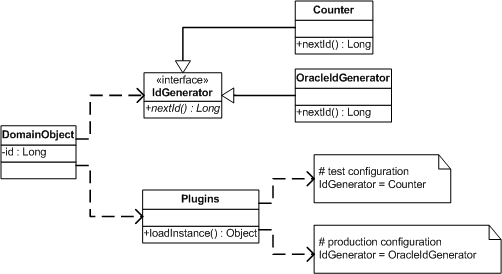

| Home | Articles | Talks | Links | Contact Me | ISA | ThoughtWorks |
by David Rice and Matt Foemmel
Link classes during configuration rather than compilation

Consider these two seemingly unrelated scenarios that rear their heads regularly in the building of an OO system:
Both scenarios, of course, quickly point one towards defining some functionality in an interface or abstract class.
But there's a bit more to it than that. Both are best implemented by linking to the concrete implementation at configuration, or application startup, time rather than compile time.
In the first scenario the interface will be defined in the domain package and implemented in the mapping package. This avoids the explicit illegal package dependency. But use of a typical factory method to get the implementation just won't do as it doesn't remove hidden compile time dependencies. We need a means of linking after compilation time.
In the second case the interface will be implemented by a handful of classes, each appropriate for a different deployment environment. Here, the use of a factory method might not create the same compile time dependency problems, but we would end up with code like this:
class IdGeneratorFactory...
public static IdGenerator getIdGenerator() {
if (TESTING) {
return new TestIdGenerator();
} else {
return new OracleIdGenerator();
}
}
Use of a standard factory method to get the implementation requires that runtime configuration information be made available to the factory. Once an application is using more than a couple factories accounting for new configurations within each and every factory becomes quite unruly. Here we have a need to govern the loading of implementations via a central, external point of configuration. Also, despite the potential lack of dependency problems we're still better off linking and loading at startup rather than compilation as the definition of a new configuration ought not mandate the rebuilding or redeployment of an application.
In both cases we do still want something factory-like that can provide an object implementing a requested interface. The requirements for our factory are that its linking instructions be provided by an easily configurable external resource, and that the linking occur as part of configuration rather than compilation.
As the linking and loading of the implementing class occurs during configuration or even later -- just in time, and the type of the implementation is dependent upon the environment configuration we call this pattern Plugin.
Implementing a Plugin requires a mapping of interfaces to implementations and an object capable of constructing those implementations. Let's refer to an interface requiring implementation via Plugin as a plugin type, an implementing class as a plugin, and the object capable of constructing the implementation as a plugin factory.

Figure 1:
Plugin works best in a language such as Java that has the ability to construct class instances by name via reflection. Using reflection as the means of plugin construction allows a single object to act as the plugin factory for all plugin types within an application, the plugin factory class to live in a framework package, and the assembling of plugin configurations to be a matter of editing text files.
Yes, the construction of an object by class name rather than constructor is typically a bad smell, but given our requirements it seems rather appropriate. Reflection does have a time and place. The fact that this use reflection is far removed from business logic makes it even more acceptable.
Without reflection more classes and/or methods are required to implement Plugin but better code will still result. Linking must now be described in a class rather than a text file thus some compilation and redeployment will be necessary to define a new configuration. However, so long as this configuration class is deployed in its own package on which no application packages are dependent the primary objectives of Plugin can still be achieved.
If configuration beyond the implementation type is required, that is, once the correct implementation is constructed the object requires some runtime information such as a connection URL, stick to the basics of separation of concerns and steer clear of using Plugin to solve that problem as well.
Use Plugin whenever you have a good reason to reverse a package, or layer, dependency rule. Perhaps you have a serial number generation algorithm that is clearly domain logic but you'd like to perform a uniqueness check before assigning the number to an asset. There's no way to get around the fact that the domain layer is now dependent on the mapping or data access layer. So you define an interface in the domain layer and implement it in the mapping layer. But you've read Martin's discussion on layering and you agree that there's a good reason for this dependency rule. The domain layer should not have a compile time dependency on the mapping layer. Use of Plugin will maintain proper layer dependencies while providing a single point at which to 'break' the rules.
The use of Plugin also makes sense when an implementation type is determined by environment rather than business logic. Key generation is a very common task in an OO application. In production a database sequence might provide keys. But in unit testing we like a simple in-memory counter to provide keys so as not to avoid the expense of connecting to a database.
A third reason to use Plugin is that framework classes frequently need to talk to application classes. This is often the case when using the Registry pattern. For example, the Unit of Work, typically a framework class, requires access to a registry of Data Mapper instances in order to commit. Simply define a DatabaseMapperRegistry interface in the same framework package as the Unit of Work and use Plugin to locate the implementation at runtime.
As discussed above, id generation is a task whose implementation might vary between deployment environments.
Figure 2:
First define the IdGenerator interface and its implementations
class IdGenerator... public Long nextId();
class OracleIdGenerator...
public OracleIdGenerator() {
this.sequence = Environment.getProperty("id.sequence");
this.datasource = Environment.getProperty("id.source");
}
class TestIdGenerator...
public class TestIdGenerator implements IdGenerator {
private long seed = System.currentTimeMillis();
public Long nextId() {
return new Long(seed++);
}
}
Now that we have something to construct let's write the plugin factory that will read the interface to implementation mappings for the current environment and construct the implementations as needed.
class PluginFactory...
private static Properties props = new Properties();
static {
try {
String propsFile = System.getProperty("plugins");
props.load(new FileInputStream(propsFile));
} catch (Exception ex) {
throw new ExceptionInInitializerError(ex);
}
}
public static Object getPlugin(Class iface) {
String implName = props.getProperty(iface.getName());
if (implName == null) {
throw new RuntimeException("implementation not specified for " +
iface.getName() + " in PluginFactory propeties.");
}
try {
return Class.forName(implName).newInstance();
} catch (Exception ex) {
throw new RuntimeException("factory unable to construct instance of " +
iface.getName());
}
}
Assemble your plugins.properties file that will map interfaces to their factories and place it in the application's working directory. Or set the VM system property 'plugins.properties' to point to the location of the file. This allows configuring plugins by editing the command that launches the VM for your application server or testing environment. Another option is writing the Plugins class to read its properties from the classpath in order that the properties be distributed in a jar along with the application's classes.
# test configuration IdGenerator=TestIdGenerator # live configuration IdGenerator=OracleIdGenerator
Let's go back to the IdGenerator interface and add a static INSTANCE member that is set by a call to the plugin factory. This combines Plugin with the singleton pattern to provide an extremely simple, readable call to obtain on id.
class IdGenerator... public static final IdGenerator INSTANCE = (IdGenerator) PluginFactory.getPlugin(IdGenerator.class);
It is now possible to make a clean call to obtain an id, knowing that you'll get the right id for the right environment.
class TestDomainObject...
public TestDomainObject create(String name) {
Long newObjId = IdGenerator.INSTANCE.nextId();
TestDomainObject obj = new TestDomainObject(name, newObjId);
obj.markNew();
return obj;
}
 |  |